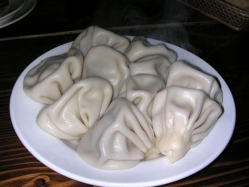

საჭირო ინგრედიენტები: 500 გრ ცხიმიანი საქონლის ან ცხვრის ხორცი, ან 300 გრ საქონლისა და 200 გრ ღორის ხორცი, 2-3 თავი ხახვი, ოხრახუში, ქინძი, პილპილი, მარილი - გემოვნებით. 1 ც კვერცხი, ფქვილი რამდენსაც შეიზელს, მარილი - გემოვნებით. მომზადების წესი: ხორცი გავასუფთავოთ, გავრეცხოთ, დავჭრათ პატარა ნაჭრებად, გავატაროთ ხორცსაკეპ მანქანაში ხახვთან და მწვანილთან ერთად. მოვაყაროთ პილპილი, მარილი და კარგად გადავურიოთ. დავამატოთ ცოტაოდენი თბილი წყალი (რამდენსაც შეიწოვს დაკეპილი ხორცი). ჯამში ჩავყაროთ ფქვილი, დავამატოთ წყალი, 1 კვერცხი, მარილი და მოვზილოთ რბილი ცომი. ხორცის ფარში და ცომი მოცულობით დაახლოებით ერთნაირი უნდა იყოს. ცომი გავაბრტყელოთ სამზარეულო დაფაზე. ჭიქით, ან ხინკლის მოსაჭრელი სპეციალური ხის ფორმით მოვჭრათ ცომის წრე, რომელზედაც კოვზით დავდოთ ხორცის თხელი ფარში, ცომის ნაპირები ამოვკეცოთ ისე, რომ გაჩნდეს `ნაოჭი~. `ნაოჭები~ ზევით მხარეს შევაერთოთ, ზედმეტი ცომი მოვწყვიტოთ. ხინკალს უნდა ჰქონდეს მრგვალი ფორმა. ხინკალი ჩავუშვათ მდუღარე, მარილიან წყალში, ქვაბი ოდნავ შევანჯღრიოთ, რომ ხინკლები ამოცურდნენ ზევით, როცა წყალი კვლავ ადუღდება, ვხარშოთ 5-10 წუთი. მოხარშული ხინკალი ქაფქირით ამოვიღოთ, მაგიდასთან მივიტანოთ ცხელი.
ხინკალი — ქართული ცომის გუფთა. შედგება ღორისა და საქონლის (ან ცხვრის) ხორცის ნარევისგან. წარმოადგენს ცომისგან დამზადებულ ერთგვარ ტომარას, რომელშიც მოთავსებულია გატარებული ხორცი. მზადდება ხარშვის წესით.